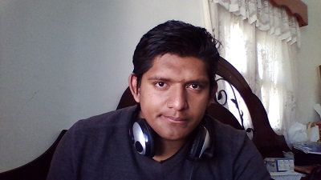

Irbing Martinez Garcia
My picture

My Biography
I was born in "El carricillo, Atarjea, Guanajuato" in the year of 1996 a very icy day. I´m actually study on UTNG in Dolores Hidalgo.
I am the eldest of three brothers. Since elementary school I was interested by the various sciences that exist in the world. In technology, especially in systems computer saw as unite my passion for all these Sciences, is for this reason that I see in systems many opportunities to develop technologies applicable to many areas
My parents taught me to be a good person and so I think that I help the people that most need it, bringing my knowledge I know I'll make it.
I Recently built a web site with my partners and teachers.
My Goals
My personal and professional goals are to:
- Have best qualifications
- Review when you have opportunity and learn more about the classes
- Read more books and practice exercises of programming
- Have a lots of experiences of life
- Meet new people that knows about programming
- Learn new programming languages and new technologies
- Share my experiences and knowledge with the people
- create my own company
- Develop a security software
- Develop an security algorithm to help people to protect their information
- Create new programs that help solve everyday problems
- Create new technologies that are used in education
My Attributes and Skills
My most important attributes and skills include
- I learn very fast anything
- I have the skills to imagine, and this is something useful in programming
- I always have lots of energy to do the things
- I know to listen to the people
- I'm always ready to do things
My Hobbies
My most favorite things to do include:
- Playing video games when I have time
- Spending time with my family when I go to my house
- Try to solve logic problems
- Research on new hardware for Pc's
- Investigar sobre los nuevos videojuegos
- Check for updates for my computer
If I was Wealthy
If I were rich, I would found some development companies and make sure that all those who work for me have more flexible and well-paying jobs.
How to Contact me
Personal Data
|
| Phone: |
441-1102456 |
| Address: |
Ignacio Perez #6 Fraccionamiento Independencia |
Places I like to visit and not visit
Places that I'd like to visit
I would like to visit Japan, since it is a country that has a lot of culture, in addition there are many pretty girls, and its people are very polite and formal.
Places that I wouldn't want to visit
No I would like to visit North Korea, since it doesn't interest me to know about this place because it is a place that is not free and its people are suffering for that reason.
Please visit my blog.
ProyectBlog